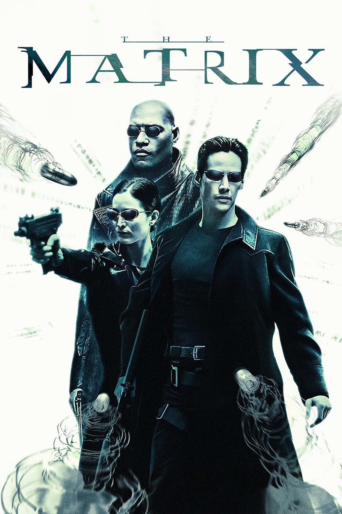

Lançamentos
-

Matrix
Ficção Ciêntifica
O jovem programador Thomas Anderson é atormentado por estranhos pesadelos em que está sempre conectado por cabos a um imenso sistema de computadores do futuro. À medida que o sonho se repete, ele começa a desconfiar da realidade. Thomas conhece os misteriosos Morpheus e Trinity e descobre que é vítima de um sistema inteligente e artificial chamado Matrix, que manipula a mente das pessoas e cria a ilusão de um mundo real enquanto usa os cérebros e corpos dos indivíduos para produzir energia.